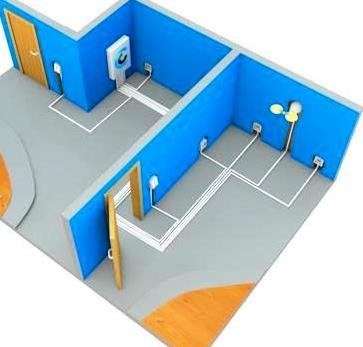

Качественный электромонтаж в Санкт-Петербурге и ленобласти, стаж 12 лет. Частный электрик, недорого и качественно.
Тел. 8 904 642 08 57 Николай.

Услуги по монтажу эл. проводки в квартире, фото и цены.
Монтаж электросети по доступной цене.
Сегодня многие компании предлагают услуги по монтажу Услуги по монтаж эл. проводки в квартире. Далеко не каждая из них готова предоставить гарантию на свою деятельность. Некоторые даже не могут доводить сложные работы до достойного уровня. Мы готовы предоставить своим заказчикам только лучшее - по доступным ценам.
Услуги по монтажу эл. проводки в квартире ответственное занятие, к этому необходимо подходить со всей серьезностью. Наша бригада занимается установкой систем электроснабжения. Мы готовы предоставить вам качественную услугу по доступной цене.
Чтобы предоставить Услуги по монтажу эл. проводки в квартире в частном доме, необходимо подобрать соответствующий кабель и оборудование.
Сколько стоит услуги по монтажу эл. проводки в квартире?
|
Вариант квартиры. |
Цена за электромонтаж мод ключ в руб. |
1 – комнатная квартира. |
От 28 000 |
Электромонтаж 2 – комнатной квартиры под ключ. |
35000 |
3- комнатной. |
44000 |
4 - комнатной. |
От 52000 |
Электромонтаж кухни в квартире. |
От 8000 |
Электромонтаж ванной комнаты. |
5000 |
Электромонтаж комнаты под ключ. |
От 10 000 |
Если вам понадобилось провести ремонт сантехнического оборудования, наша компания готова предоставить свои услуги по монтажу, ремонту и демонтажу электрики. Мы также предлагаем своим клиентам осуществление предварительного осмотра объектов, а также согласования перечня выполняемых работ, проведение калькуляции стоимости и прогнозирования готовых результатов. Мы самостоятельно оформить нужные документы, вам не придется тратить на это личное время.
У нас вы можете заказать Услуги по монтажу эл. проводки в квартире, как крупные, так и небольшие работы. Предусматривается возможность выезда на крупное предприятие и работа на нем. Мы готовы рассмотреть разные предложения от заказчиков и предложить наиболее выгодный вариант сотрудничества для каждого и них.
Наш профессионал готов устранить следующие проблемы;
- Устранение обрывов в электросети;
- Проведение диагностики электропроводки;
- Замена трансформаторов и дросселей; - Установка светильников, бра и пр.;
- Прокладка электрического кабеля;
- Замена и перенос выключателей;
- Подготовка;
- Установку электрического оборудования;
- Подключение стиральных машин;
- Сопутствующие услуги.
 Вы можете заказать у нас Услуги по монтажу эл. проводки в квартире в области проведения электромонтажных работ. Как частичную замену электропроводки, так установку розеток и подключение бытовых приборов, чтобы обеспечить электрификацию крупных помещений. Стоит отметить, что ремонт помещений не терпит легкомысленного отношения. Наши профессионалы ответственно подходят к выполнению своих задач.
Вы можете заказать у нас Услуги по монтажу эл. проводки в квартире в области проведения электромонтажных работ. Как частичную замену электропроводки, так установку розеток и подключение бытовых приборов, чтобы обеспечить электрификацию крупных помещений. Стоит отметить, что ремонт помещений не терпит легкомысленного отношения. Наши профессионалы ответственно подходят к выполнению своих задач.
Только качественные услуги по монтажу эл. проводки в квартире по доступным ценам.
Мы готовы провести электромонтажные работы в квартирах, офисах, складах, жилых помещениях. Обеспечить вас бесплатной – подробной консультацией по поводу электроснабжения вашего комплекса, а также проектирования электрики и др.
Благодаря солидному опыту наши профессионалы прекрасно разбираются в вопросах электроснабжения и др.
Как работают наши специалисты.
При участии профессионального инженера-электрика производятся следующие типы работ.
Разрабатывается план системы электроснабжения.
Составляется смета о том, где и сколько будет расположено розеток. Профессиональный электрик подсчитает количество затрачиваемой энергии, а также окажет консультацию по другим вопросом электроснабжения. Стоимость монтажа проводки от специалистов нашей компании существенно ниже, чем в профессиональных фирмах. Если вы решили заняться установкой оборудования, то заказывайте ее у нас – обеспечите себя достойной цены на выполнение работ.
- Правильная установка электричества способствует легкому доступу к оборудованию и месту разрыва. Обычная проводка прослужит от 20 до 30 лет. Чтобы увеличить срок эксплуатации необходимо правильно выполнять ее монтаж.
 Поменять проводку в квартире.
Поменять проводку в квартире. Сколько будут стоить материалы.
Электрика в загородном доме стоимость работ.

Замена электропроводки в панельном доме.
Расценки на электропроводку квартир.
Замена проводки в хрущевке.
Электромонтаж в частном доме.
Электрика в загородном доме.
Сколько стоит замена электропроводки в двухкомнатной квартире?.
Электрик в новостройку однокомнатная квартира недорого.

Сколько стоит поменять электропроводку в 3-х комнатной квартире.